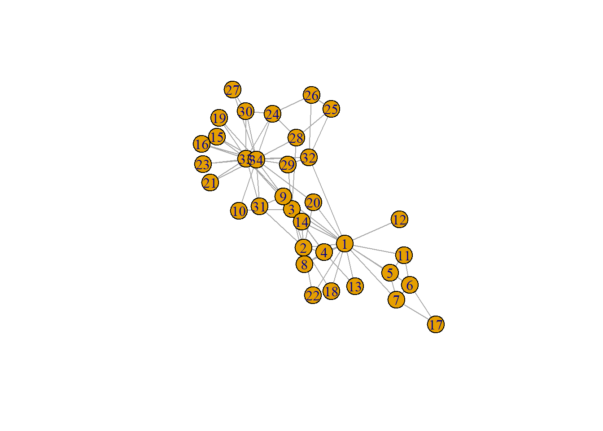
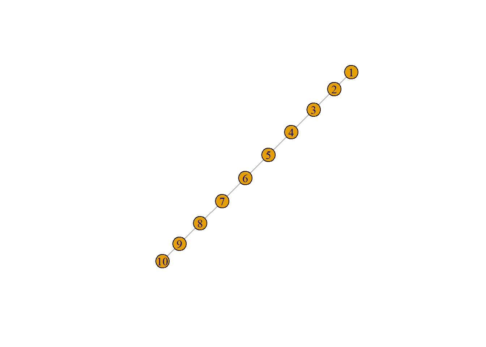
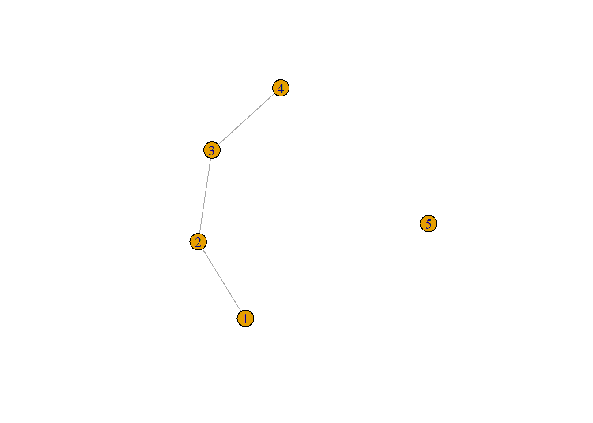
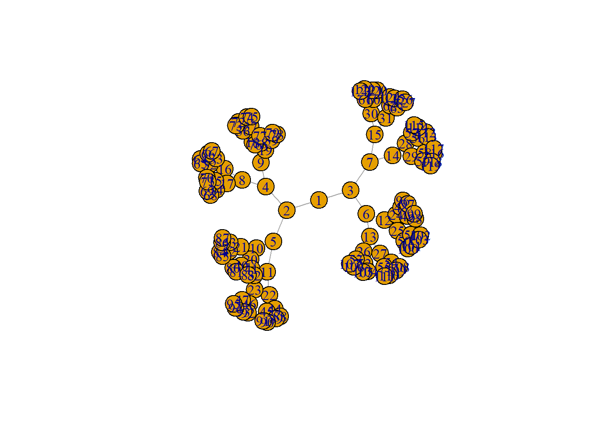
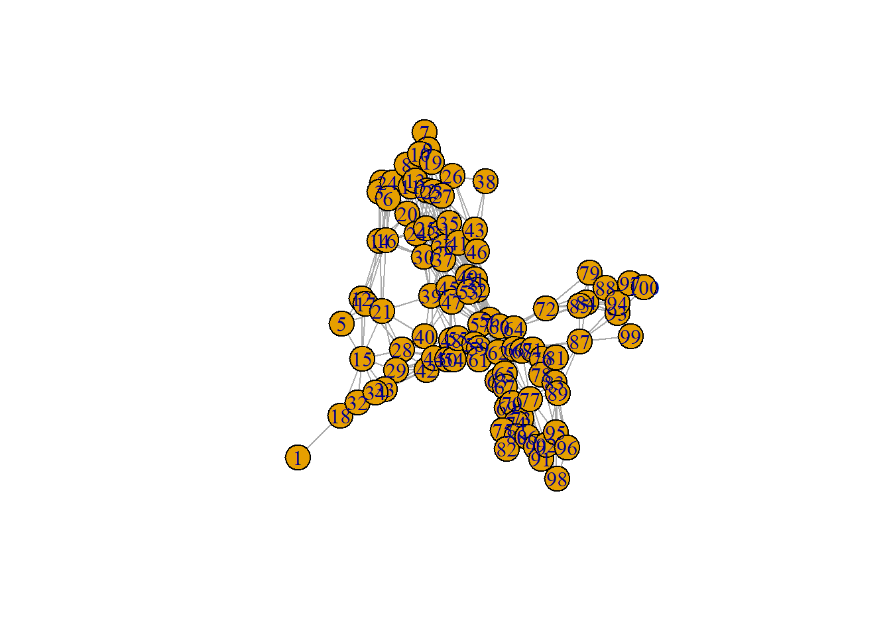
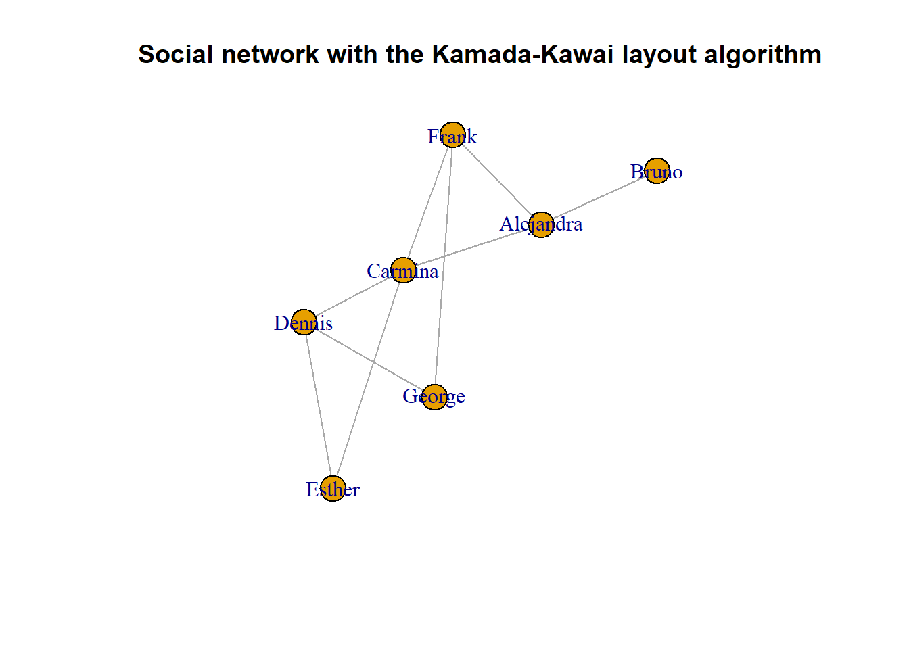
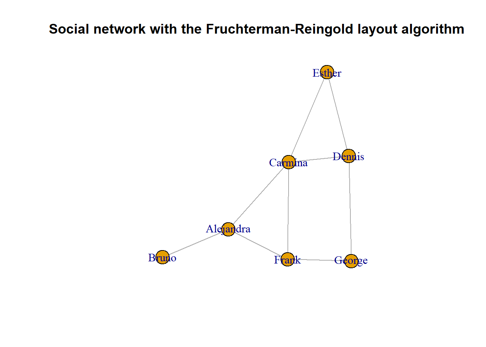
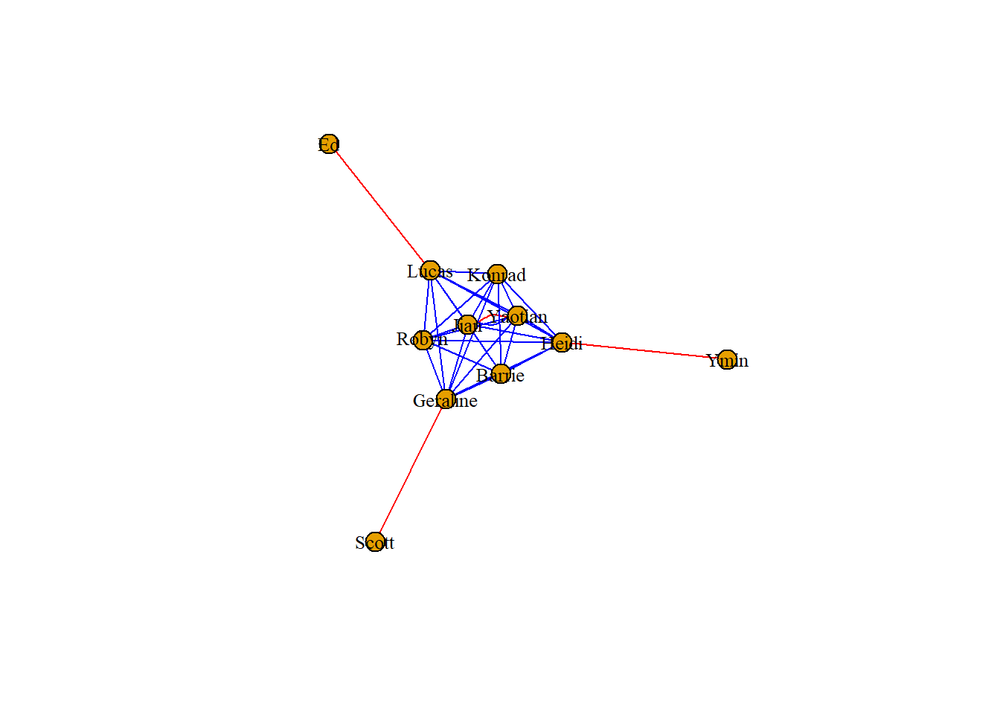
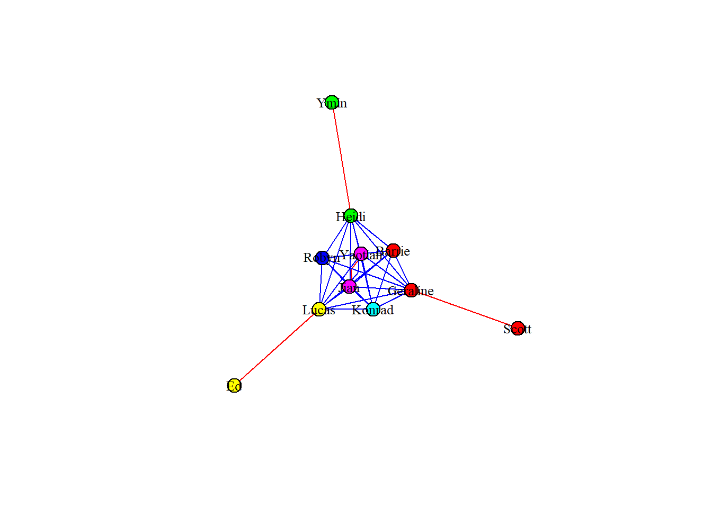

In this assignment, we’ll consider some of the tools and techniques for visualizing network data. Network data is characterized by two unique items that are not found in tabular or spatial data - Nodes and Links. In addition, there is a sub-type of network data that we will consider - Hierarchical or Tree data. Let’s practice a few visualizations to get a feel for how these things work!
NETWORK BASICS!
In class we talked about the strong possibility that each of you will encounter network data in your research. These data could be describing lots of different things in biologicial syste,s, from gene or protein expression networks, to hierarchical representations of ontologies, to phylogenetic trees. In geology and geoinformatics, network data would be used to describe the co-occurence of mineral species, or even knowledge graphs and other information representations.
IGRAPH
Let’s start with igraph, which is an open source toolset for network analysis. The great thing about igraph is that you can use these tools in R, Python, Mathematica, and C++. It is very flexible and very powerful.
igraph in R
First up, we’ll install R/igraph and load the library (note that I’ve commented out the package installation because I’ve already installed igraph on my machine):
Code
# install.packages("igraph")library(igraph)
Warning: package 'igraph' was built under R version 4.3.3
Attaching package: 'igraph'
The following objects are masked from 'package:stats':
decompose, spectrum
The following object is masked from 'package:base':
union
Now I’m going to walk you through a modified version of the igraph tutorial, which you can find here
Creating a graph
igraph offers many ways to create a graph. The simplest one is the function make_empty_graph:
Code
g <-make_empty_graph()
The most common way to create a graph is make_graph, which constructs a network based on specified edges. For example, to make a graph with 10 nodes (numbered 1 to 10) and two edges connecting nodes 1-2 and 1-5:
Code
g <-make_graph(edges =c(1,2, 1,5), n=10, directed =FALSE)
We can print the graph to get a summary of its nodes and edges:
This means: Undirected Named graph with 10 vertices and 2 edges, with the exact edges listed out. If the graph has a [name] attribute, it is printed as well.
Note
summary does not list the edges, which is convenient for large graphs with millions of edges:
Code
summary(g)
IGRAPH c290017 U--- 10 2 --
The same function make_graph can create some notable graphs by just specifying their name. For example you can create the graph that represents the social network of Zachary’s karate club, that shows the friendship between 34 members of a karate club at a US university in the 1970s:
Code
g <-make_graph('Zachary')
To visualize a graph you can use plot:
Code
plot(g)

Vertex and edge IDs
Vertices and edges have numerical vertex IDs in igraph. Vertex IDs are always consecutive and they start with 1. For a graph with n vertices the vertex IDs are always between 1 and n. If some operation changes the number of vertices in the graphs, e.g. a subgraph is created via induced_subgraph, then the vertices are renumbered to satisfy this criterion.
The same is true for the edges as well: edge IDs are always between 1 and m, the total number of edges in the graph.
In addition to IDs, vertices and edges can be assigned a name and other attributes. That makes it easier to track them whenever the graph is altered.
Adding/deleting vertices and edges
Let’s continue working with the Karate club graph. To add one or more vertices to an existing graph, use add_vertices:
Code
g <-add_vertices(g, 3)
Similarly, to add edges you can use add_edges:
Code
g <-add_edges(g, edges =c(1,35, 1,36, 34,37))
Edges are added by specifying the source and target vertex IDs for each edge. This call added three edges, one connecting vertices 1 and 35, one connecting vertices 1 and 36, and one connecting vertices 34 and 37.
In addition to the add_vertices and add_edges functions, the plus operator can be used to add vertices or edges to graph. The actual operation that is performed depends on the type of the right hand side argument:
Code
g <- g +edges(c(1,35, 1,36, 34,37))
You can add a single vertex/edge at a time using add_vertex and add_edge.
Let us add some more vertices and edges to our graph. In igraph we can use the magrittr package, which provides a mechanism for chaining commands with the operator %\>%:
Code
g <- g %>%add_edges(edges=c(1,34)) %>%add_vertices(3) %>%add_edges(edges=c(38,39, 39,40, 40,38, 40,37))g
We now have an undirected graph with 40 vertices and 86 edges. Vertex and edge IDs are always contiguous, so if you delete a vertex all subsequent vertices will be renumbered. When a vertex is renumbered, edges are not renumbered, but their source and target vertices will be. Use delete_vertices and delete_edges to perform these operations. For instance, to delete the edge connecting vertices 1-34, get its ID and then delete it:
Code
get.edge.ids(g, c(1,34))
[1] 82
Code
g <-delete_edges(g, 82)
As an example, to create a broken ring:
Code
g <-make_ring(10) %>%delete_edges("10|1")plot(g)

The example above shows that you can also refer to edges with strings containing the IDs of the source and target vertices, connected by a pipe symbol |. "10|1" in the above example means the edge that connects vertex 10 to vertex 1. Of course you can also use the edge IDs directly, or retrieve them with the get.edge.ids function:
Code
g <-make_ring(5)g <-delete_edges(g, get.edge.ids(g, c(1,5, 4,5)))plot(g)

Constructing graphs
In addition to make_empty_graph, make_graph, and make_graph_from_literal, igraph includes many other function to construct a graph. Some are deterministic, i.e. they produce the same graph each single time, e.g. make_tree:
IGRAPH c2ff318 U--- 127 126 -- Tree
+ attr: name (g/c), children (g/n), mode (g/c)
Code
plot(graph1)

This generates a regular tree graph with 127 vertices, each vertex having two children. No matter how many times you call make_tree, the generated graph will always be the same if you use the same parameters:
Code
graph2 <-make_tree(127, 2, mode ="undirected")
Code
identical_graphs(graph1,graph2)
[1] TRUE
Other functions generate graphs stochastically, i.e. they produce a different graph each time. For instance sample_grg:
Code
graph1 <-sample_grg(100, 0.2)summary(graph1)
IGRAPH c3262d9 U--- 100 479 -- Geometric random graph
+ attr: name (g/c), radius (g/n), torus (g/l)
Code
plot(graph1)

This generates a geometric random graph: n points are chosen randomly and uniformly inside the unit square and pairs of points closer to each other than a predefined distance d are connected by an edge. If you generate GRGs with the same parameters, they will be different:
A slightly looser way to check if the graphs are equivalent is via isomorphic. Two graphs are said to be isomorphic if they have the same number of components (vertices and edges) and maintain a one-to-one correspondence between vertices and edges, i.e., they are connected in the same way.
Code
isomorphic(graph1, graph2)
[1] FALSE
Checking for isomorphism can take a while for large graphs (in this case, the answer can quickly be given by checking the degree sequence of the two graphs). identical_graph is a stricter criterion than isomorphic: the two graphs must have the same list of vertices and edges, in exactly the same order, with same directedness, and the two graphs must also have identical graph, vertex and edge attributes.
Setting and retrieving attributes
In addition to IDs, vertex and edges can have attributes such as a name, coordinates for plotting, metadata, and weights. The graph itself can have such attributes too (e.g. a name, which will show in summary). In a sense, every graph, vertex and edge can be used as an R namespace to store and retrieve these attributes.
To demonstrate the use of attributes, let us create a simple social network:
Code
g <-make_graph(~ Alice-Bob:Claire:Frank, Claire-Alice:Dennis:Frank:Esther, George-Dennis:Frank, Dennis-Esther)
Each vertex represents a person, so we want to store ages, genders and types of connection between two people (is_formal refers to whether a connection between one person or another is formal or informal, i.e. colleagues or friends). The \$ operator is a shortcut to get and set graph attributes. It is shorter and just as readable as graph_attr and set_graph_attr.
IGRAPH c368994 UN-- 7 9 --
+ attr: name (v/c), age (v/n), gender (v/c), is_formal (e/l)
V and E are the standard way to obtain a sequence of all vertices and edges, respectively. This assigns an attribute to all vertices/edges at once. Another way to generate our social network is with the use of set_vertex_attr and set_edge_attr and the operator %\>%:
Code
g <-make_graph(~ Alice-Bob:Claire:Frank, Claire-Alice:Dennis:Frank:Esther, George-Dennis:Frank, Dennis-Esther) %>%set_vertex_attr("age", value =c(25, 31, 18, 23, 47, 22, 50)) %>%set_vertex_attr("gender", value =c("f", "m", "f", "m", "m", "f", "m")) %>%set_edge_attr("is_formal", value =c(FALSE, FALSE, TRUE, TRUE, TRUE, FALSE, TRUE, FALSE, FALSE))summary(g)
To assign or modify an attribute for a single vertex/edge:
Attribute values can be set to any R object, but note that storing the graph in some file formats might result in the loss of complex attribute values. Vertices, edges and the graph itself can all be used to set attributes, e.g. to add a date to the graph:
Code
g$date <-c("2022-02-11")graph_attr(g, "date")
[1] "2022-02-11"
To retrieve attributes, you can also use graph_attr, vertex_attr, and edge_attr. To find the ID of a vertex you can use the function match:
Code
match(c("George"), V(g)$name)
[1] 7
To assign attributes to a subset of vertices or edges, you can use:
+ 7/7 vertices, named, from c368994:
[1] Alejandra Bruno Carmina Frank Dennis Esther George
To delete attributes:
Code
g <-delete_vertex_attr(g, "gender")V(g)$gender
NULL
If you want to save a graph in R with all the attributes use the R’s standard function dput function and retrieve it later with dget. You can also just save the R workspace and restore it later.
Structural properties of graphs
igraph provides a large set of functions to calculate various structural properties of graphs. It is beyond the scope of this tutorial to document all of them, hence this section will only introduce a few of them for illustrative purposes. We will work on the small social network constructed in the previous section.
Perhaps the simplest property one can think of is the degree. The degree of a vertex equals the number of edges adjacent to it. In case of directed networks, we can also define in-degree (the number of edges pointing towards the vertex) and out-degree (the number of edges originating from the vertex). igraph is able to calculate all of them using a simple syntax:
Code
degree(g)
Alejandra Bruno Carmina Frank Dennis Esther George
3 1 4 3 3 2 2
If the graph was directed, we would have been able to calculate the in- and out-degrees separately using degree(mode="in") and degree(mode="out"). You can also pass a single vertex ID or a list of vertex IDs to degree if you want to calculate the degrees for only a subset of vertices:
Code
degree(g, 7)
George
2
Code
degree(g, v=c(3,4,5))
Carmina Frank Dennis
4 3 3
Most functions that accept vertex IDs also accept vertex names (i.e. the values of the name vertex attribute) as long as the names are unique:
Code
degree(g, v=c("Carmina", "Frank", "Dennis"))
Carmina Frank Dennis
4 3 3
It also works for single vertices:
Code
degree(g, "Bruno")
Bruno
1
A similar syntax is used for most of the structural properties igraph can calculate. For vertex properties, the functions accept a vertex ID, a vertex name, or a list of vertex IDs or names (and if they are omitted, the default is the set of all vertices). For edge properties, the functions accept a single edge ID or a list of edge IDs.
NOTE: For some measures, it does not make sense to calculate them only for a few vertices or edges instead of the whole graph, as it would take the same time anyway. In this case, the functions won’t accept vertex or edge IDs, but you can still restrict the resulting list later using standard operations. One such example is eigenvector centrality (evcent()).
Besides degree, igraph includes built-in routines to calculate many other centrality properties, including vertex and edge betweenness (edge_betweenness) or Google’s PageRank (page_rank) just to name a few. Here we just illustrate edge betweenness:
Code
edge_betweenness(g)
[1] 6 6 4 3 4 4 4 2 3
Now we can also figure out which connections have the highest betweenness centrality:
Imagine that in a given social network, you want to find out who has the largest degree. You can do that with the tools presented so far and the which.max function:
Code
which.max(degree(g))
Carmina
3
Another example would be to select only vertices that have only odd IDs but not even ones, using the V function:
Of course, it is possible to select vertices or edges by positional indices:
Code
seq <-V(graph)[2, 3, 7]seq
+ 3/10 vertices, from c3b4b7d:
[1] 2 3 7
Code
seq <- seq[1, 3] # filtering an existing vertex setseq
+ 2/10 vertices, from c3b4b7d:
[1] 2 7
Selecting a vertex that does not exist results in an error:
Code
seq <-V(graph)[2, 3, 7, "foo", 3.5]## Error in simple_vs_index(x, ii, na_ok) : Unknown vertex selected
Attribute names can also be used as-is within the indexing brackets of V() and E(). This can be combined with R’s ability to use boolean vectors for indexing to obtain very concise and readable expressions to retrieve a subset of the vertex or edge set of a graph. For instance, the following command gives you the names of the individuals younger than 30 years in our social network:
Code
V(g)[age <30]$name
[1] "Alejandra" "Carmina" "Frank" "Esther"
Of course, < is not the only boolean operator that can be used for this. Other possibilities include the following:
Operator
Meaning
==
The attribute/property value must be equal to
!=
The attribute/property value must not be equal to
<
The attribute/property value must be less than
<=
The attribute/property value must be less than or equal to
>
The attribute/property value must be greater than
>=
The attribute/property value must be greater than or equal to
%in%
The attribute/property value must be included in
You can also create a “not in” operator from %in% using the Negate function:
Code
`%notin%`<-Negate(`%in%`)
If an attribute has the same name as an igraph function, you should be careful as the syntax can become a little confusing. For instance, if there is an attribute named degree that represents the grades of an exam for each person, that should not be confused with the igraph function that computes the degrees of vertices in a network sense:
Edges can be selected based on attributes just like vertices. As mentioned above, the standard way to get edges is E. Moreover, there are a few special structural properties for selecting edges.
Using .from allows you to filter the edge sequence based on the source vertices of the edges. E.g., to select all the edges originating from Carmina (who has vertex index 3):
Code
E(g)[.from(3)]
+ 4/9 edges from c368994 (vertex names):
[1] Alejandra--Carmina Carmina --Frank Carmina --Dennis Carmina --Esther
Of course it also works with vertex names:
Code
E(g)[.from("Carmina")]
+ 4/9 edges from c368994 (vertex names):
[1] Alejandra--Carmina Carmina --Frank Carmina --Dennis Carmina --Esther
Using .to filters edge sequences based on the target vertices. This is different from .from if the graph is directed, while it gives the same answer for undirected graphs. Using .inc selects only those edges that are incident on a single vertex or at least one of the vertices, irrespectively of the edge directions.
The %--% operator can be used to select edges between specific groups of vertices, ignoring edge directions in directed graphs. For instance, the following expression selects all the edges between Carmina (vertex index 3), Dennis (vertex index 5) and Esther (vertex index 6):
Code
E(g) [ 3:5%--%5:6 ]
+ 3/9 edges from c368994 (vertex names):
[1] Carmina--Dennis Carmina--Esther Dennis --Esther
To make the %--% operator work with names, you can build string vectors containing the names and then use these vectors as operands. For instance, to select all the edges that connect men to women, we can do the following after re-adding the gender attribute that we deleted earlier:
+ 5/9 edges from c368994 (vertex names):
[1] Alejandra--Bruno Alejandra--Frank Carmina --Frank Carmina --Dennis
[5] Dennis --Esther
Treating a graph as an adjacency matrix
The adjacency matrix is another way to represent a graph. In an adjacency matrix, rows and columns are labeled by graph vertices, and the elements of the matrix indicate the number of edges between vertices i and j. The adjacency matrix for the example graph is:
Code
get.adjacency(g)
Warning: `get.adjacency()` was deprecated in igraph 2.0.0.
ℹ Please use `as_adjacency_matrix()` instead.
7 x 7 sparse Matrix of class "dgCMatrix"
Alejandra Bruno Carmina Frank Dennis Esther George
Alejandra . 1 1 1 . . .
Bruno 1 . . . . . .
Carmina 1 . . 1 1 1 .
Frank 1 . 1 . . . 1
Dennis . . 1 . . 1 1
Esther . . 1 . 1 . .
George . . . 1 1 . .
For example, Carmina (1, 0, 0, 1, 1, 1, 0) is directly connected to Alejandra (who has vertex index 1), Frank (index 4), Dennis (index 5) and Esther (index 6), but not to Bruno (index 2) or to George (index 7).
Layouts and plotting
A graph is an abstract mathematical object without a specific representation in 2D, 3D or any other geometric space. This means that whenever we want to visualise a graph, we have to find a mapping from vertices to coordinates in two- or three-dimensional space first, preferably in a way that is useful and/or pleasing for the eye. A separate branch of graph theory, namely graph drawing, tries to solve this problem via several graph layout algorithms. igraph implements quite a few layout algorithms and is also able to draw them onto the screen or to any output format that R itself supports.
Layout algorithms
The layout functions in igraph always start with layout. The following table summarises them:
Method name
Algorithm description
layout_randomly
Places the vertices completely randomly
layout_in_circle
Deterministic layout that places the vertices on a circle
layout_on_sphere
Deterministic layout that places the vertices evenly on the surface of a sphere
layout_with_drl
The Drl (Distributed Recursive Layout) algorithm for large graphs
layout_with_fr
Fruchterman-Reingold force-directed algorithm
layout_with_kk
Kamada-Kawai force-directed algorithm
layout_with_lgl
The LGL (Large Graph Layout) algorithm for large graphs
layout_as_tree
Reingold-Tilford tree layout, useful for (almost) tree-like graphs
layout_nicely
Layout algorithm that automatically picks one of the other algorithms based on certain properties of the graph
Layout algorithms can be called directly with a graph as its first argument. They will return a matrix with two columns and as many rows as the number of vertices in the graph; each row will correspond to the position of a single vertex, ordered by vertex IDs. Some algorithms have a 3D variant; in this case they return three columns instead of 2.
Code
layout <-layout_with_kk(g)
Some layout algorithms take additional arguments; e.g., when laying out a graph as a tree, it might make sense to specify which vertex is to be placed at the root of the layout:
Code
layout <-layout_as_tree(g, root =2)
Drawing a graph using a layout
We can plot our imaginary social network with the Kamada-Kawai layout algorithm as follows:
Code
layout <-layout_with_kk(g)
Code
plot(g, layout = layout, main ="Social network with the Kamada-Kawai layout algorithm")

This should open a new window showing a visual representation of the network. Remember that the exact placement of nodes may be different on your machine since the layout is not deterministic.
The layout argument also accepts functions; in this case, the function will be called with the graph as its first argument. This makes it possible to just pass the name of a layout function directly, without creating a layout variable:
Code
plot(g, layout = layout_with_fr,main ="Social network with the Fruchterman-Reingold layout algorithm")

To improve the visuals, a trivial addition would be to color the vertices according to the gender. We should also try to place the labels slightly outside the vertices to improve readability:
Code
V(g)$color <-ifelse(V(g)$gender =="m", "yellow", "red")plot(g, layout = layout, vertex.label.dist =3.5,main ="Social network - with genders as colors")
You can also treat the gender attribute as a factor and provide the colors with an argument to plot(), which takes precedence over the color vertex attribute. Colors will be assigned automatically to levels of a factor:
As seen above with the vertex.color argument, you can specify visual properties as arguments to plot instead of using vertex or edge attributes. The following plot shows the formal ties with thick lines while informal ones with thin lines:
This latter approach is preferred if you want to keep the properties of the visual representation of your graph separate from the graph itself.
In summary, there are special vertex and edge properties that correspond to the visual representation of the graph. These attributes override the default settings of igraph (i.e color, weight, name, shape,layout,etc.). The following two tables summarise the most frequently used visual attributes for vertices and edges, respectively:
Vertex attributes controlling graph plots
Attribute name
Keyword argument
Purpose
color
vertex.color
Color of the vertex
label
vertex.label
Label of the vertex. They will be converted to character. Specify NA to omit vertex labels. The default vertex labels are the vertex ids.
label.cex
vertex.label.cex
Font size of the vertex label, interpreted as a multiplicative factor, similarly to R’s text function
label.color
vertex.label.color
Color of the vertex label
label.degree
vertex.label.degree
It defines the position of the vertex labels, relative to the center of the vertices. It is interpreted as an angle in radian, zero means ‘to the right’, and ‘pi’ means to the left, up is -pi/2 and down is pi/2. The default value is -pi/4
label.dist
vertex.label.dist
Distance of the vertex label from the vertex itself, relative to the vertex size
label.family
vertex.label.family
Font family of the vertex, similarly to R’s text function
label.font
vertex.label.font
Font within the font family of the vertex, similarly to R’s text function
shape
vertex.shape
The shape of the vertex, currently “circle”, “square”, “csquare”, “rectangle”, “crectangle”, “vrectangle”, “pie” (see vertex.shape.pie), ‘sphere’, and “none” are supported, and only by the plot.igraph command.
size
vertex.size
The size of the vertex, a numeric scalar or vector, in the latter case each vertex sizes may differ
Edge attributes controlling graph plots
Attribute name
Keyword argument
Purpose
color
edge.color
Color of the edge
curved
edge.curved
A numeric value specifies the curvature of the edge; zero curvature means straight edges, negative values means the edge bends clockwise, positive values the opposite. TRUE means curvature 0.5, FALSE means curvature zero
arrow.size
edge.arrow.size
Currently this is a constant, so it is the same for every edge. If a vector is submitted then only the first element is used, ie. if this is taken from an edge attribute then only the attribute of the first edge is used for all arrows.
arrow.width
edge.arrow.width
The width of the arrows. Currently this is a constant, so it is the same for every edge
width
edge.width
Width of the edge in pixels
label
edge.label
If specified, it adds a label to the edge.
label.cex
edge.label.cex
Font size of the edge label, interpreted as a multiplicative factor, similarly to R’s text function
label.color
edge.label.color
Color of the edge label
label.family
edge.label.family
Font family of the edge, similarly to R’s text function
label.font
edge.label.font
Font within the font family of the edge, similarly to R’s text function
Generic arguments of plot()
These settings can be specified as arguments to the plot function to control the overall appearance of the plot.
Keyword argument
Purpose
layout
The layout to be used. It can be an instance of Layout, a list of tuples containing X-Y coordinates, or the name of a layout algorithm. The default is auto, which selects a layout algorithm automatically based on the size and connectedness of the graph.
margin
The amount of empty space below, over, at the left and right of the plot, it is a numeric vector of length four.
Have a look at the structure of the two dataframes (people and relations). igraph is creating a graph object using the relations data frame as an edge list. The rest of the elements are attributes of the nodes or the edges that we can use for visualization.
While these examples are illustrative, they are also a bit contrived. It is rare that you would manually make a network. It is far more common that you will use existing data to visualize a network. A big challenge is often converting your data into a format that igraph can work with, such as an edge list or adjacency matrix.
For example, what if we wanted to use the BCB520 variable in the people dataframe to create additional edges?
There are lots of ways to do this. Here is one:
Code
library(dplyr)
Attaching package: 'dplyr'
The following objects are masked from 'package:igraph':
as_data_frame, groups, union
The following objects are masked from 'package:stats':
filter, lag
The following objects are masked from 'package:base':
intersect, setdiff, setequal, union
library(igraph)library(igraph)# Assuming you already have 'people' and 'relations' data frames# Color Palettepalette <-c("blue", "red")# Create the graphg <-graph_from_data_frame(relations3, directed =FALSE, vertices = people)# Define edge colors based on attributesedge_colors <-ifelse(E(g)$BCB520 =="TRUE", palette[1], ifelse(E(g)$Advisor =="TRUE", palette[2], "black"))# Plot the graph with customized edge colorsplot( g,layout = layout_nicely,edge.color = edge_colors,vertex.label.color ="black",vertex.size =10,vertex.label.cex =0.8,edge.arrow.size =0.5)

Code
library(igraph)# Assuming you already have 'people' and 'relations' data frames# Color Palettepalette <-c("blue", "red")# Create the graphg <-graph_from_data_frame(relations3, directed =FALSE, vertices = people)# Get unique departmentsdepartments <-unique(people$department)# Define colors for each departmentdepartment_colors <-rainbow(length(departments))# Map department colors to verticesV(g)$color <- department_colors[match(people$department, departments)]# Define edge colors based on attributesedge_colors <-ifelse(E(g)$BCB520 =="TRUE", palette[1], ifelse(E(g)$Advisor =="TRUE", palette[2], "black"))# Plot the graph with customized edge colorsplot( g,layout = layout_nicely,edge.color = edge_colors,vertex.label.color ="black",vertex.size =10,vertex.label.cex =0.8,edge.arrow.size =0.5)

Source Code
---title: "Practice with Network Data"subtitle: "Nodes and Links and edges and vertices..."format: html: toc: false echo: trueauthor: "Barrie Robison"date: "2024-04-04"categories: [Portfolio, DataViz, Network, iGraph, Assignment]image: "wendigonetwork.png"description: "iGRAPH!"code-fold: truecode-tools: true---# OVERVIEWIn this assignment, we'll consider some of the tools and techniques for visualizing network data. Network data is characterized by two unique items that are not found in tabular or spatial data - Nodes and Links. In addition, there is a sub-type of network data that we will consider - Hierarchical or Tree data. Let's practice a few visualizations to get a feel for how these things work!# NETWORK BASICS!In class we talked about the strong possibility that each of you will encounter network data in your research. These data could be describing lots of different things in biologicial syste,s, from gene or protein expression networks, to hierarchical representations of ontologies, to phylogenetic trees. In geology and geoinformatics, network data would be used to describe the co-occurence of mineral species, or even knowledge graphs and other information representations.## IGRAPHLet's start with [igraph](https://igraph.org), which is an open source toolset for network analysis. The great thing about igraph is that you can use these tools in R, Python, Mathematica, and C++. It is very flexible and very powerful.### igraph in RFirst up, we'll install R/igraph and load the library (note that I've commented out the package installation because I've already installed igraph on my machine):```{r}# install.packages("igraph")library(igraph)```Now I'm going to walk you through a modified version of the igraph tutorial, which you can find [here](https://r.igraph.org/articles/igraph.html)## Creating a graph`igraph` offers many ways to create a graph. The simplest one is the function `make_empty_graph`:```{r}g <-make_empty_graph()```The most common way to create a graph is `make_graph`, which constructs a network based on specified edges. For example, to make a graph with 10 nodes (numbered `1` to `10`) and two edges connecting nodes `1-2` and `1-5`:```{r}g <-make_graph(edges =c(1,2, 1,5), n=10, directed =FALSE)```We can print the graph to get a summary of its nodes and edges:```{r echo = TRUE}g```This means: **U**ndirected **N**amed graph with **10** vertices and **2** edges, with the exact edges listed out. If the graph has a `[name]` attribute, it is printed as well.::: callout-note`summary` does not list the edges, which is convenient for large graphs with millions of edges::::```{r echo = TRUE}summary(g)```The same function `make_graph` can create some notable graphs by just specifying their name. For example you can create the graph that represents the social network of Zachary's karate club, that shows the friendship between 34 members of a karate club at a US university in the 1970s:```{r echo = TRUE}g <-make_graph('Zachary')```To visualize a graph you can use `plot`:```{r}plot(g)```## Vertex and edge IDsVertices and edges have numerical vertex IDs in igraph. Vertex IDs are always consecutive and they start with 1. For a graph with n vertices the vertex IDs are always between 1 and n. If some operation changes the number of vertices in the graphs, e.g. a subgraph is created via `induced_subgraph`, then the vertices are renumbered to satisfy this criterion.The same is true for the edges as well: edge IDs are always between 1 and m, the total number of edges in the graph.In addition to IDs, vertices and edges can be assigned a name and other attributes. That makes it easier to track them whenever the graph is altered.## Adding/deleting vertices and edgesLet's continue working with the Karate club graph. To add one or more vertices to an existing graph, use `add_vertices`:```{r}g <-add_vertices(g, 3)```Similarly, to add edges you can use `add_edges`:```{r}g <-add_edges(g, edges =c(1,35, 1,36, 34,37))```Edges are added by specifying the source and target vertex IDs for each edge. This call added three edges, one connecting vertices `1` and `35`, one connecting vertices `1` and `36`, and one connecting vertices `34` and `37`.In addition to the `add_vertices` and `add_edges` functions, the plus operator can be used to add vertices or edges to graph. The actual operation that is performed depends on the type of the right hand side argument:```{r echo = TRUE, eval=FALSE}g <- g +edges(c(1,35, 1,36, 34,37))```You can add a single vertex/edge at a time using `add_vertex` and `add_edge`.Let us add some more vertices and edges to our graph. In `igraph` we can use the `magrittr` package, which provides a mechanism for chaining commands with the operator `%\>%`:```{r echo = TRUE}g <- g %>%add_edges(edges=c(1,34)) %>%add_vertices(3) %>%add_edges(edges=c(38,39, 39,40, 40,38, 40,37))gplot(g)```We now have an undirected graph with 40 vertices and 86 edges. Vertex and edge IDs are always *contiguous*, so if you delete a vertex all subsequent vertices will be renumbered. When a vertex is renumbered, edges are **not** renumbered, but their source and target vertices will be. Use `delete_vertices` and `delete_edges` to perform these operations. For instance, to delete the edge connecting vertices `1-34`, get its ID and then delete it:```{r echo = TRUE}get.edge.ids(g, c(1,34))``````{r}g <-delete_edges(g, 82)```As an example, to create a broken ring:```{r echo = TRUE}g <-make_ring(10) %>%delete_edges("10|1")plot(g)```The example above shows that you can also refer to edges with strings containing the IDs of the source and target vertices, connected by a pipe symbol `|`. `"10|1"` in the above example means the edge that connects vertex 10 to vertex 1. Of course you can also use the edge IDs directly, or retrieve them with the `get.edge.ids` function:```{r echo = TRUE}g <-make_ring(5)g <-delete_edges(g, get.edge.ids(g, c(1,5, 4,5)))plot(g)```## Constructing graphsIn addition to `make_empty_graph`, `make_graph`, and `make_graph_from_literal`, `igraph` includes many other function to construct a graph. Some are *deterministic*, i.e. they produce the same graph each single time, e.g. `make_tree`:```{r echo = TRUE}graph1 <-make_tree(127, 2, mode ="undirected")summary(graph1)plot(graph1)```This generates a regular tree graph with 127 vertices, each vertex having two children. No matter how many times you call `make_tree`, the generated graph will always be the same if you use the same parameters:```{r}graph2 <-make_tree(127, 2, mode ="undirected")``````{r echo = TRUE}identical_graphs(graph1,graph2)```Other functions generate graphs *stochastically*, i.e. they produce a different graph each time. For instance `sample_grg`:```{r echo = TRUE}graph1 <-sample_grg(100, 0.2)summary(graph1)plot(graph1)```This generates a geometric random graph: *n* points are chosen randomly and uniformly inside the unit square and pairs of points closer to each other than a predefined distance *d* are connected by an edge. If you generate GRGs with the same parameters, they will be different:```{r echo = TRUE}graph2 <-sample_grg(100, 0.2)identical_graphs(graph1, graph2)plot(graph2)```A slightly looser way to check if the graphs are equivalent is via `isomorphic`. Two graphs are said to be isomorphic if they have the same number of components (vertices and edges) and maintain a one-to-one correspondence between vertices and edges, i.e., they are connected in the same way.```{r echo = TRUE}isomorphic(graph1, graph2)```Checking for isomorphism can take a while for large graphs (in this case, the answer can quickly be given by checking the degree sequence of the two graphs). `identical_graph` is a stricter criterion than `isomorphic`: the two graphs must have the same list of vertices and edges, in exactly the same order, with same directedness, and the two graphs must also have identical graph, vertex and edge attributes.## Setting and retrieving attributesIn addition to IDs, vertex and edges can have *attributes* such as a name, coordinates for plotting, metadata, and weights. The graph itself can have such attributes too (e.g. a name, which will show in `summary`). In a sense, every graph, vertex and edge can be used as an R namespace to store and retrieve these attributes.To demonstrate the use of attributes, let us create a simple social network:```{r}g <-make_graph(~ Alice-Bob:Claire:Frank, Claire-Alice:Dennis:Frank:Esther, George-Dennis:Frank, Dennis-Esther)```Each vertex represents a person, so we want to store ages, genders and types of connection between two people (`is_formal` refers to whether a connection between one person or another is formal or informal, i.e. colleagues or friends). The `\$` operator is a shortcut to get and set graph attributes. It is shorter and just as readable as `graph_attr` and `set_graph_attr`.```{r echo = TRUE}V(g)$age <-c(25, 31, 18, 23, 47, 22, 50) V(g)$gender <-c("f", "m", "f", "m", "m", "f", "m")E(g)$is_formal <-c(FALSE, FALSE, TRUE, TRUE, TRUE, FALSE, TRUE, FALSE, FALSE)summary(g)````V` and `E` are the standard way to obtain a sequence of all vertices and edges, respectively. This assigns an attribute to *all* vertices/edges at once. Another way to generate our social network is with the use of `set_vertex_attr` and `set_edge_attr` and the operator `%\>%`:```{r echo = TRUE, eval=FALSE}g <-make_graph(~ Alice-Bob:Claire:Frank, Claire-Alice:Dennis:Frank:Esther, George-Dennis:Frank, Dennis-Esther) %>%set_vertex_attr("age", value =c(25, 31, 18, 23, 47, 22, 50)) %>%set_vertex_attr("gender", value =c("f", "m", "f", "m", "m", "f", "m")) %>%set_edge_attr("is_formal", value =c(FALSE, FALSE, TRUE, TRUE, TRUE, FALSE, TRUE, FALSE, FALSE))summary(g)```To assign or modify an attribute for a single vertex/edge:```{r echo = TRUE}E(g)$is_formalE(g)$is_formal[1] <-TRUEE(g)$is_formal```Attribute values can be set to any R object, but note that storing the graph in some file formats might result in the loss of complex attribute values. Vertices, edges and the graph itself can all be used to set attributes, e.g. to add a date to the graph:```{r echo = TRUE}g$date <-c("2022-02-11")graph_attr(g, "date")```To retrieve attributes, you can also use `graph_attr`, `vertex_attr`, and `edge_attr`. To find the ID of a vertex you can use the function `match`:```{r echo = TRUE}match(c("George"), V(g)$name)```To assign attributes to a subset of vertices or edges, you can use:```{r echo = TRUE}V(g)$name[1:3] <-c("Alejandra", "Bruno", "Carmina")V(g)```To delete attributes:```{r echo = TRUE}g <-delete_vertex_attr(g, "gender")V(g)$gender```If you want to save a graph in R with all the attributes use the R's standard function `dput` function and retrieve it later with `dget`. You can also just save the R workspace and restore it later.## Structural properties of graphs`igraph` provides a large set of functions to calculate various structural properties of graphs. It is beyond the scope of this tutorial to document all of them, hence this section will only introduce a few of them for illustrative purposes. We will work on the small social network constructed in the previous section.Perhaps the simplest property one can think of is the *degree*. The degree of a vertex equals the number of edges adjacent to it. In case of directed networks, we can also define *in-degree* (the number of edges pointing towards the vertex) and *out-degree* (the number of edges originating from the vertex). `igraph` is able to calculate all of them using a simple syntax:```{r echo = TRUE}degree(g)```If the graph was directed, we would have been able to calculate the in- and out-degrees separately using `degree(mode="in")` and `degree(mode="out")`. You can also pass a single vertex ID or a list of vertex IDs to `degree` if you want to calculate the degrees for only a subset of vertices:```{r echo = TRUE}degree(g, 7)``````{r echo = TRUE}degree(g, v=c(3,4,5))```Most functions that accept vertex IDs also accept vertex *names* (i.e. the values of the `name` vertex attribute) as long as the names are unique:```{r echo = TRUE}degree(g, v=c("Carmina", "Frank", "Dennis"))```It also works for single vertices:```{r echo = TRUE}degree(g, "Bruno")```A similar syntax is used for most of the structural properties `igraph` can calculate. For vertex properties, the functions accept a vertex ID, a vertex name, or a list of vertex IDs or names (and if they are omitted, the default is the set of all vertices). For edge properties, the functions accept a single edge ID or a list of edge IDs.------------------------------------------------------------------------**NOTE:** For some measures, it does not make sense to calculate them only for a few vertices or edges instead of the whole graph, as it would take the same time anyway. In this case, the functions won't accept vertex or edge IDs, but you can still restrict the resulting list later using standard operations. One such example is eigenvector centrality (`evcent()`).------------------------------------------------------------------------Besides degree, igraph includes built-in routines to calculate many other centrality properties, including vertex and edge betweenness (`edge_betweenness`) or Google's PageRank (`page_rank`) just to name a few. Here we just illustrate edge betweenness:```{r echo = TRUE}edge_betweenness(g)```Now we can also figure out which connections have the highest betweenness centrality:```{r echo = TRUE}ebs <-edge_betweenness(g)as_edgelist(g)[ebs ==max(ebs), ]```## Querying vertices and edges based on attributes### Selecting verticesImagine that in a given social network, you want to find out who has the largest degree. You can do that with the tools presented so far and the `which.max` function:```{r echo = TRUE}which.max(degree(g))```Another example would be to select only vertices that have only odd IDs but not even ones, using the `V` function:```{r echo = TRUE}graph <-graph.full(n=10)only_odd_vertices <-which(V(graph)%%2==1)length(only_odd_vertices)```Of course, it is possible to select vertices or edges by positional indices:```{r echo = TRUE}seq <-V(graph)[2, 3, 7]seq``````{r echo = TRUE}seq <- seq[1, 3] # filtering an existing vertex setseq```Selecting a vertex that does not exist results in an error:```{r echo = TRUE, eval = FALSE}seq <-V(graph)[2, 3, 7, "foo", 3.5]## Error in simple_vs_index(x, ii, na_ok) : Unknown vertex selected```Attribute names can also be used as-is within the indexing brackets of `V()` and `E()`. This can be combined with R's ability to use boolean vectors for indexing to obtain very concise and readable expressions to retrieve a subset of the vertex or edge set of a graph. For instance, the following command gives you the names of the individuals younger than 30 years in our social network:```{r echo = TRUE}V(g)[age <30]$name```Of course, `<` is not the only boolean operator that can be used for this. Other possibilities include the following:| Operator | Meaning ||----------|-----------------------------------------------------------------|| `==` | The attribute/property value must be *equal to* || `!=` | The attribute/property value must *not be equal to* || `<` | The attribute/property value must be *less than* || `<=` | The attribute/property value must be *less than or equal to* || `>` | The attribute/property value must be *greater than* || `>=` | The attribute/property value must be *greater than or equal to* || `%in%` | The attribute/property value must be *included in* |You can also create a "not in" operator from `%in%` using the `Negate` function:```{r echo = TRUE}`%notin%`<-Negate(`%in%`)```If an attribute has the same name as an `igraph` function, you should be careful as the syntax can become a little confusing. For instance, if there is an attribute named `degree` that represents the grades of an exam for each person, that should not be confused with the `igraph` function that computes the degrees of vertices in a network sense:```{r echo = TRUE}V(g)$degree <-c("A", "B", "B+", "A+", "C", "A", "B")V(g)$degree[degree(g) ==3]``````{r echo = TRUE}V(g)$name[degree(g) ==3]```### Selecting edgesEdges can be selected based on attributes just like vertices. As mentioned above, the standard way to get edges is `E`. Moreover, there are a few special structural properties for selecting edges.Using `.from` allows you to filter the edge sequence based on the source vertices of the edges. E.g., to select all the edges originating from Carmina (who has vertex index 3):```{r echo = TRUE, warning = FALSE}E(g)[.from(3)]```Of course it also works with vertex names:```{r echo = TRUE, warning = FALSE}E(g)[.from("Carmina")]```Using `.to` filters edge sequences based on the target vertices. This is different from `.from` if the graph is directed, while it gives the same answer for undirected graphs. Using `.inc` selects only those edges that are incident on a single vertex or at least one of the vertices, irrespectively of the edge directions.The `%--%` operator can be used to select edges between specific groups of vertices, ignoring edge directions in directed graphs. For instance, the following expression selects all the edges between Carmina (vertex index 3), Dennis (vertex index 5) and Esther (vertex index 6):```{r echo = TRUE}E(g) [ 3:5%--%5:6 ]```To make the `%--%` operator work with names, you can build string vectors containing the names and then use these vectors as operands. For instance, to select all the edges that connect men to women, we can do the following after re-adding the gender attribute that we deleted earlier:```{r}V(g)$gender <-c("f", "m", "f", "m", "m", "f", "m")``````{r echo = TRUE}men <-V(g)[gender =="m"]$namemen``````{r echo = TRUE}women <-V(g)[gender =="f"]$namewomen``````{r echo = TRUE}E(g)[men %--% women]```## Treating a graph as an adjacency matrixThe adjacency matrix is another way to represent a graph. In an adjacency matrix, rows and columns are labeled by graph vertices, and the elements of the matrix indicate the number of edges between vertices *i* and *j*. The adjacency matrix for the example graph is:```{r echo = TRUE}get.adjacency(g)```For example, Carmina (`1, 0, 0, 1, 1, 1, 0`) is directly connected to Alejandra (who has vertex index 1), Frank (index 4), Dennis (index 5) and Esther (index 6), but not to Bruno (index 2) or to George (index 7).## Layouts and plottingA graph is an abstract mathematical object without a specific representation in 2D, 3D or any other geometric space. This means that whenever we want to visualise a graph, we have to find a mapping from vertices to coordinates in two- or three-dimensional space first, preferably in a way that is useful and/or pleasing for the eye. A separate branch of graph theory, namely graph drawing, tries to solve this problem via several graph layout algorithms. igraph implements quite a few layout algorithms and is also able to draw them onto the screen or to any output format that R itself supports.### Layout algorithmsThe layout functions in igraph always start with `layout`. The following table summarises them:| Method name | Algorithm description ||--------------------|----------------------------------------------------------------------------------------------------------------|| `layout_randomly` | Places the vertices completely randomly || `layout_in_circle` | Deterministic layout that places the vertices on a circle || `layout_on_sphere` | Deterministic layout that places the vertices evenly on the surface of a sphere || `layout_with_drl` | The Drl (Distributed Recursive Layout) algorithm for large graphs || `layout_with_fr` | Fruchterman-Reingold force-directed algorithm || `layout_with_kk` | Kamada-Kawai force-directed algorithm || `layout_with_lgl` | The LGL (Large Graph Layout) algorithm for large graphs || `layout_as_tree` | Reingold-Tilford tree layout, useful for (almost) tree-like graphs || `layout_nicely` | Layout algorithm that automatically picks one of the other algorithms based on certain properties of the graph |Layout algorithms can be called directly with a graph as its first argument. They will return a matrix with two columns and as many rows as the number of vertices in the graph; each row will correspond to the position of a single vertex, ordered by vertex IDs. Some algorithms have a 3D variant; in this case they return three columns instead of 2.```{r}layout <-layout_with_kk(g)```Some layout algorithms take additional arguments; e.g., when laying out a graph as a tree, it might make sense to specify which vertex is to be placed at the root of the layout:```{r}layout <-layout_as_tree(g, root =2)```### Drawing a graph using a layoutWe can plot our imaginary social network with the Kamada-Kawai layout algorithm as follows:```{r}layout <-layout_with_kk(g)``````{r}plot(g, layout = layout, main ="Social network with the Kamada-Kawai layout algorithm")```This should open a new window showing a visual representation of the network. Remember that the exact placement of nodes may be different on your machine since the layout is not deterministic.The `layout` argument also accepts functions; in this case, the function will be called with the graph as its first argument. This makes it possible to just pass the name of a layout function directly, without creating a layout variable:```{r}plot(g, layout = layout_with_fr,main ="Social network with the Fruchterman-Reingold layout algorithm")```To improve the visuals, a trivial addition would be to color the vertices according to the gender. We should also try to place the labels slightly outside the vertices to improve readability:```{r}V(g)$color <-ifelse(V(g)$gender =="m", "yellow", "red")plot(g, layout = layout, vertex.label.dist =3.5,main ="Social network - with genders as colors")```You can also treat the `gender` attribute as a factor and provide the colors with an argument to `plot()`, which takes precedence over the `color` vertex attribute. Colors will be assigned automatically to levels of a factor:```{r}plot(g, layout=layout, vertex.label.dist=3.5, vertex.color=as.factor(V(g)$gender))```As seen above with the `vertex.color` argument, you can specify visual properties as arguments to `plot` instead of using vertex or edge attributes. The following plot shows the formal ties with thick lines while informal ones with thin lines:```{r}plot(g, layout=layout, vertex.label.dist=3.5, vertex.size=20,vertex.color=ifelse(V(g)$gender =="m", "yellow", "red"),edge.width=ifelse(E(g)$is_formal, 5, 1))```This latter approach is preferred if you want to keep the properties of the visual representation of your graph separate from the graph itself.In summary, there are special vertex and edge properties that correspond to the visual representation of the graph. These attributes override the default settings of igraph (i.e color, weight, name, shape,layout,etc.). The following two tables summarise the most frequently used visual attributes for vertices and edges, respectively:### Vertex attributes controlling graph plots| Attribute name | Keyword argument | Purpose ||----------------|-----------------------|------------------------------------------------------------------------------------------------------------------------------------------------------------------------------------------------------------------------------------------------|| `color` | `vertex.color` | Color of the vertex || `label` | `vertex.label` | Label of the vertex. They will be converted to character. Specify NA to omit vertex labels. The default vertex labels are the vertex ids. || `label.cex` | `vertex.label.cex` | Font size of the vertex label, interpreted as a multiplicative factor, similarly to R's `text` function || `label.color` | `vertex.label.color` | Color of the vertex label || `label.degree` | `vertex.label.degree` | It defines the position of the vertex labels, relative to the center of the vertices. It is interpreted as an angle in radian, zero means 'to the right', and 'pi' means to the left, up is -pi/2 and down is pi/2. The default value is -pi/4 || `label.dist` | `vertex.label.dist` | Distance of the vertex label from the vertex itself, relative to the vertex size || `label.family` | `vertex.label.family` | Font family of the vertex, similarly to R's `text` function || `label.font` | `vertex.label.font` | Font within the font family of the vertex, similarly to R's `text` function || `shape` | `vertex.shape` | The shape of the vertex, currently "circle", "square", "csquare", "rectangle", "crectangle", "vrectangle", "pie" (see vertex.shape.pie), 'sphere', and "none" are supported, and only by the plot.igraph command. || `size` | `vertex.size` | The size of the vertex, a numeric scalar or vector, in the latter case each vertex sizes may differ |### Edge attributes controlling graph plots| Attribute name | Keyword argument | Purpose ||----------------|---------------------|---------------------------------------------------------------------------------------------------------------------------------------------------------------------------------------------------------------------------------------------|| `color` | `edge.color` | Color of the edge || `curved` | `edge.curved` | A numeric value specifies the curvature of the edge; zero curvature means straight edges, negative values means the edge bends clockwise, positive values the opposite. TRUE means curvature 0.5, FALSE means curvature zero || `arrow.size` | `edge.arrow.size` | Currently this is a constant, so it is the same for every edge. If a vector is submitted then only the first element is used, ie. if this is taken from an edge attribute then only the attribute of the first edge is used for all arrows. || `arrow.width` | `edge.arrow.width` | The width of the arrows. Currently this is a constant, so it is the same for every edge || `width` | `edge.width` | Width of the edge in pixels || `label` | `edge.label` | If specified, it adds a label to the edge. || `label.cex` | `edge.label.cex` | Font size of the edge label, interpreted as a multiplicative factor, similarly to R's `text` function || `label.color` | `edge.label.color` | Color of the edge label || `label.family` | `edge.label.family` | Font family of the edge, similarly to R's `text` function || `label.font` | `edge.label.font` | Font within the font family of the edge, similarly to R's `text` function |### Generic arguments of `plot()`These settings can be specified as arguments to the `plot` function to control the overall appearance of the plot.| Keyword argument | Purpose ||------------------|-------------------------------------------------------------------------------------------------------------------------------------------------------------------------------------------------------------------------------------------------------------------|| `layout` | The layout to be used. It can be an instance of `Layout`, a list of tuples containing X-Y coordinates, or the name of a layout algorithm. The default is `auto`, which selects a layout algorithm automatically based on the size and connectedness of the graph. || `margin` | The amount of empty space below, over, at the left and right of the plot, it is a numeric vector of length four. |# A NON BORING EXAMPLE!```{r}library(readxl)people<-read_xlsx("Networks.xlsx", sheet ="People")relations<-read_xlsx("Networks.xlsx", sheet ="Relations")g <-graph_from_data_frame(relations, directed=FALSE, vertices=people)plot(g)```Have a look at the structure of the two dataframes (`people` and `relations`). `igraph` is creating a graph object using the `relations` data frame as an edge list. The rest of the elements are attributes of the nodes or the edges that we can use for visualization.While these examples are illustrative, they are also a bit contrived. It is rare that you would manually make a network. It is far more common that you will use existing data to visualize a network. A big challenge is often converting your data into a format that `igraph` can work with, such as an edge list or adjacency matrix.For example, what if we wanted to use the BCB520 variable in the `people` dataframe to create additional edges?There are lots of ways to do this. Here is one:```{r}library(dplyr)BCB<-people%>%filter(BCB520 =="TRUE")%>%select(name, BCB520)edgelist<-combn(BCB$name, 2)edgelist_df <-as.data.frame(t(edgelist))colnames(edgelist_df) <-c("from", "to")edgelist_df$BCB520<-"TRUE"edgelist_df$Advisor<-"FALSE"relations$BCB520 <-"FALSE"relations3<-rbind(relations, edgelist_df)g <-graph_from_data_frame(relations3, directed=FALSE, vertices=people)plot(g, layout = layout_with_fr)```## ASSIGNMENTImprove the network above by:1. Coloring the edges according to Advisor / BCB520 attribute.2. Coloring the nodes according to Department.3. Adujsting the labels to improve readability.4. Find the best layout you can for this garbage. What a nightmare.## IMPROVED NETWORK```{r}library(dplyr)BCB<-people%>%filter(BCB520 =="TRUE")%>%select(name, BCB520)edgelist<-combn(BCB$name, 2)edgelist_df <-as.data.frame(t(edgelist))colnames(edgelist_df) <-c("from", "to")edgelist_df$BCB520<-"TRUE"edgelist_df$Advisor<-"FALSE"relations$BCB520 <-"FALSE"relations3<-rbind(relations, edgelist_df)g <-graph_from_data_frame(relations3, directed=FALSE, vertices=people)plot(g, layout = layout_with_fr)``````{r}library(igraph)library(igraph)# Assuming you already have 'people' and 'relations' data frames# Color Palettepalette <-c("blue", "red")# Create the graphg <-graph_from_data_frame(relations3, directed =FALSE, vertices = people)# Define edge colors based on attributesedge_colors <-ifelse(E(g)$BCB520 =="TRUE", palette[1], ifelse(E(g)$Advisor =="TRUE", palette[2], "black"))# Plot the graph with customized edge colorsplot( g,layout = layout_nicely,edge.color = edge_colors,vertex.label.color ="black",vertex.size =10,vertex.label.cex =0.8,edge.arrow.size =0.5)``````{r}library(igraph)# Assuming you already have 'people' and 'relations' data frames# Color Palettepalette <-c("blue", "red")# Create the graphg <-graph_from_data_frame(relations3, directed =FALSE, vertices = people)# Get unique departmentsdepartments <-unique(people$department)# Define colors for each departmentdepartment_colors <-rainbow(length(departments))# Map department colors to verticesV(g)$color <- department_colors[match(people$department, departments)]# Define edge colors based on attributesedge_colors <-ifelse(E(g)$BCB520 =="TRUE", palette[1], ifelse(E(g)$Advisor =="TRUE", palette[2], "black"))# Plot the graph with customized edge colorsplot( g,layout = layout_nicely,edge.color = edge_colors,vertex.label.color ="black",vertex.size =10,vertex.label.cex =0.8,edge.arrow.size =0.5)```